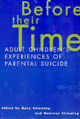

Honest first-person accounts by daughters and sons of the impact of parental suicide on them and their families
Honest first-person accounts by daughters and sons of the impact of parental suicide on them and their families


 Honest first-person accounts by daughters and sons of the impact of parental suicide on them and their families
Honest first-person accounts by daughters and sons of the impact of parental suicide on them and their families

|  |
Before Their TimeAdult Children's Experiences of Parental Suicideedited by Mary Stimming and Maureen Stimmingpaper EAN: 978-1-56639-655-4 (ISBN: 1-56639-655-7) |
Before Their Time is the first work to present adult children survivors' (defined as eighteen or above at the time of the parent's death) accounts of their loss, grief, and resolution following a parent's suicide. In one section, the book offers the perspectives of sons and daughters on the deaths of mothers; in another, the perspectives of sons and daughters on the deaths of fathers. In a third section, four siblings reflect on the shared loss of their mother.
Each of these survivors faces the common difficulties associated with losing a loved one by suicide. They also experience difficulties specific to their status as both adult and child. Topics such as the impact of the parent's suicide on adult children's personal and professional choices, marriages and parenting, sibling and surviving parent relationships are explored with sensitivity and insight. Various coping skills, including humor, are described.
The writers describe feelings of regret and responsibility related to their parent's suicide. They express concern about other family members' vulnerability to suicide. They speak openly about the fears and stresses they face and how they cope with them.
The authors ranged in age from nineteen to thirty-six at the time of the parent's death. Between one and twenty-five years have passed since that tragedy.
In addition to the first-person narratives, the book includes a resource section with a national listing of suicide survivor support groups; an overview of existing research on survivors of suicide by John L. McIntosh, past president of the American Association of Suicidology; and an essay on elderly suicide by David C. Clark, secretary-general, International Association for Suicide, and editor-in-chief of Crisis. The book is introduced with a Foreword by Rev. Charles Rubey, founder and director of Loving Outreach to Survivors of Suicide.
Excerpt available at www.temple.edu/tempress
Foreword – Rev. Charles T. Rubey
Preface
Acknowledgments
Part I: Loss of a Mother
Daughters
A Joyful Spirit – Treva Gordon
Home and Beyond – Stephanie Weber
Center Piece – Kimberley Garnhart
Changes of Direction – Marcia Angelos
Sons
Caretaking – Doug Battema
The Prodigal Son Diaries – Todd Tobias
Crossroads – Tom Dalton
Range of Vision – Mark Stringer
Intermezzo
Grandchildren
Suicide as Family Destiny?
Part II: Loss of a Father
Daughters
Old at Heart – Heather Zuzick
Growing toward the Light – Wanda Ford-Petrevics
A Saving Curse – Suzanne Gardner
I Will Not Die of Regret: A Letter to My Father – Greacian Goeke
Sons
Of Fathers and Sons – John F.
The Process of Cultivating – Paul J.
Flying Lessons – James A. Gessner
Intermezzo
Professional Life
Life without a Parent
Part III: Perspectives on a Common Loss
Daughters
Uncommon Grace – Mary Stimming
Endings and Beginnings – Maureen Stimming
Sons
It's the Story of a Lovely Lady – Christopher Stimming
What Life Has to Offer – Joseph Stimming
Part IV: Research and Resources
The Puzzle of Suicide in Late Life – David C. Clark
Research on Survivors of Suicide – John L. McIntosh
Selected Annotated Bibliography
Directory of Suicide Survivor Support Groups
Index
Mary Stimming, Assistant Professor of Religious Studies at Dominican University, gives lectures and workshops on suicide and religion.
Maureen Stimming, Associate Director of Career Services at Chicago-Kent College of Law, served as a therapist in a residential mental health treatment center before completing graduate studies in psychology. Prior to her work at Kent, she served as a counselor in the Chicago parochial school system.
Family Policy
Psychology
General Interest
© 2015 Temple University. All Rights Reserved. This page: http://www.temple.edu/tempress/titles/1333_reg.html.